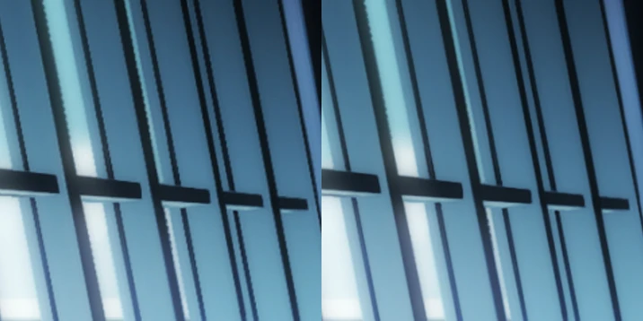

VCB-Studio是一个动漫压制组，提供了许多高质量的动漫资源。
所谓压制，就是将动漫从光盘、电视录像等原始载体中提取出来，编码成我们常见的视频文件。这并不是用格式工厂点一下转换按钮就能完成的轻松工作。原盘素材因为载体等原因，往往会存在噪点、锯齿、色彩断层之类的问题，压制组要在质量修复和保留原始细节之间寻求平衡。
如图为压制前的原盘画面（左）和压制后的修复画面（右）的对比。

VCB-Studio有自己的分流组，所以提供的BT资源的健康度都很不错，下载速度很快。除此之外，VCB-Studio还会收录音乐原声带、评论音轨、插画扫描件之类的周边一并分发。
VCB-Studio的官网有关于播放器配置的教程，跟随教程配置播放器可以起到不错的播放器效果。此外，VCB-Studio还提供了VCB-Studio公开教程，包含音视频基础知识、压制教程等等，内容是偏专业的理论+实操干货，可以用来自学音视频编码操作。
值得注意的是，VCB-Studio是动漫压制组，不是字幕组，默认不提供字幕资源。不过，VCB-Studio经常和其它字幕组合作，发布的资源会外挂合作字幕组提供的字幕。